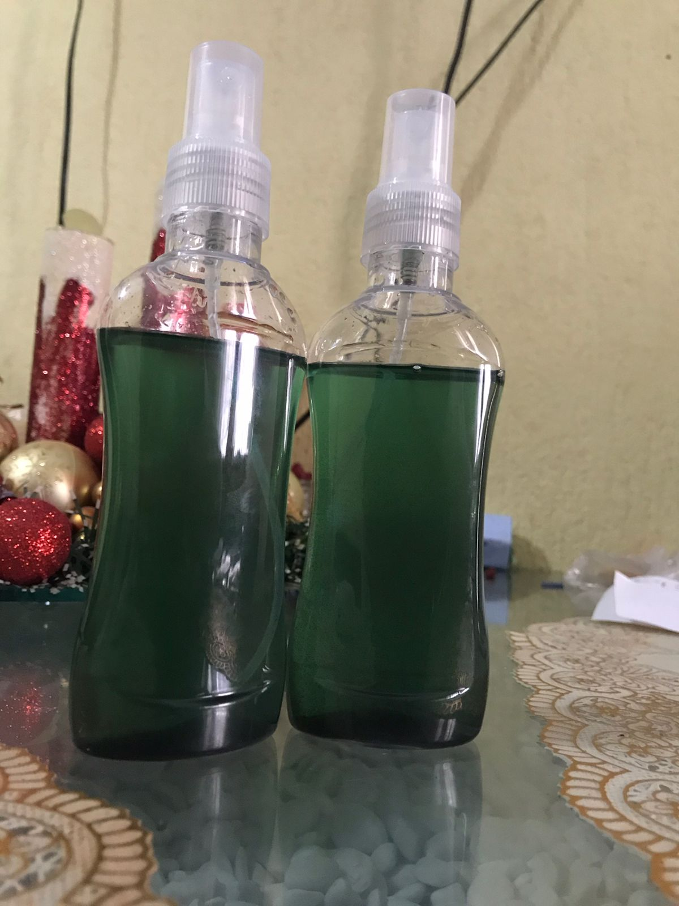

Productos

Ambientador Repelente
Descripción del Producto:
Este producto es un ambientador biodegradable diseñado para cuidar el medio ambiente y respetar a los animales. Contiene ingredientes seleccionados para proporcionar una experiencia olfativa agradable, mejorar el ambiente y aportar bienestar general.
Ingredientes y Propiedades:
-Esencia de Lavanda: Proporciona un aroma relajante que crea una atmósfera fresca y tranquila. Además, puede tener beneficios aromaterapéuticos.
-Alcohol al 70%: Actúa como disolvente, permite la mezcla de los ingredientes activos y facilita la dispersión del aroma en el ambiente. También tiene propiedades antimicrobianas y se evapora rápidamente sin dejar residuos.
-Glicerina: Funciona como humectante, ayudando a mantener la humedad y prolongando la duración del aroma. Además, mejora la textura del producto y contribuye a una liberación uniforme de la fragancia.
Propósito:
Crear un ambiente agradable mediante una fragancia duradera y equilibrada, con beneficios adicionales como relajación, mejora del estado de ánimo y propiedades antimicrobianas.
Este producto no contiene insectos, es respetuoso con el medio ambiente y está pensado para brindar una experiencia sostenible y placentera.
Precio $80.00 c/u
Comprar